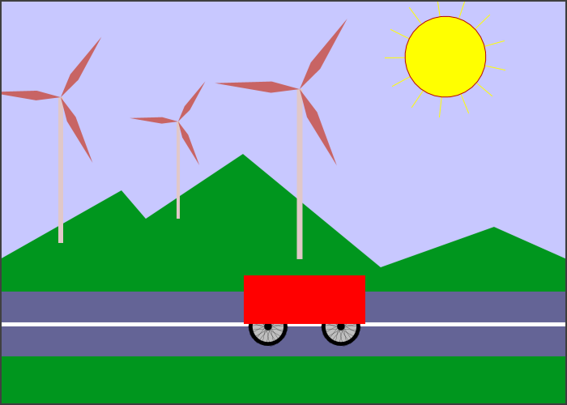
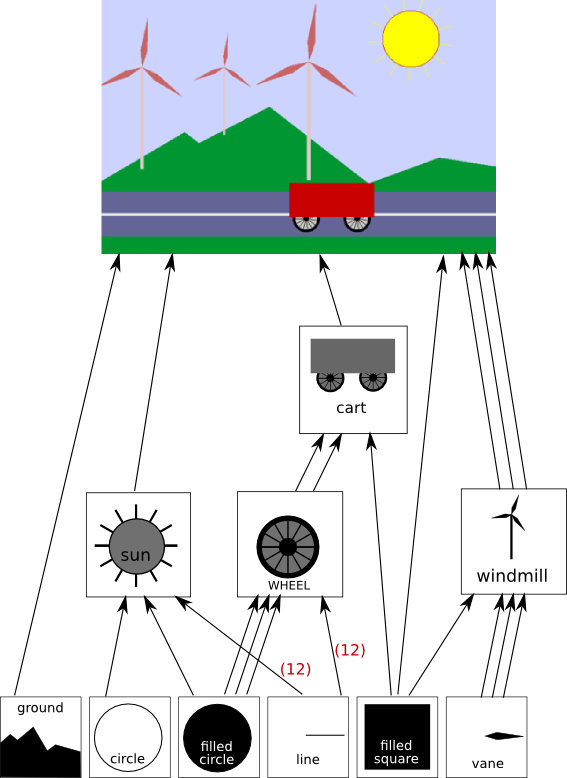

We return in this section to the idea of using transformations to draw objects in a scene. In particular, we will consider complex scenes, in which complex objects are composed of simpler objects, which can themselves be made up of even simpler objects. The structure of such objects is hierarchical, and their construction is referred to as "hierarchical modeling."
A major motivation for introducing a new coordinate system is that it should be possible to use the coordinate system that is most natural to the scene that you want to draw. We can extend this idea to individual objects in a scene: When drawing an object, it should be possible to use the coordinate system that is most natural to the object. Geometric transformations allow us to specify the object using whatever coordinate system we want, and then to apply a transformation to the object to place it wherever we want it in the scene. Recall that transformations used in this way are called modeling transformations.
Usually, we want an object in its natural coordinates to be centered at the origin, (0,0), or at least to use the origin as a convenient reference point. Then, to place it in the scene, we can use a scaling transform, followed by a rotation, followed by a translation to set its size, orientation, and position in the scene. (Of course, in a particular case, you might not need all three operations.) Since scaling and rotation leave the origin fixed, those operations don't move the reference point for the object. The translation is then used to move the reference point, and the object along with it, to any other point. Remember that in the code, the transformations are specified in the opposite order from the order in which they are applied to the object and that the transformations are specified before drawing the object. So in the code, the translation would come first, followed by the rotation and then the scaling. Modeling transformations are not always composed in this order, but it is the most common usage.
The modeling transformations that are used to place an object in the scene should not affect other objects in the scene. To limit their application to just the one object, we can save the current transformation before starting work on the object and restore it afterwards. In Java, the code could look something like this, where g is a Graphics2D:
AffineTransform saveTransform = g.getTransform(); g.translate(a,b); // move object into position g.rotate(r); // set the orientation of the object g.scale(s,s); // set the size of the object ... // draw the object, using its natural coordinates g.setTransform(saveTransform); // restore the previous transform
Note that we can't simply assume that the original transform is the identity transform. There might be another transform in place, such as a coordinate transform that affects the scene as a whole. The modeling transform for the object is effectively applied in addition to any other transform that was specified previously. The modeling transform moves the object from its natural coordinates into its proper place in the scene. Then on top of that, a coordinate transform is applied to the scene as a whole, carrying the object along with it.
Now let's extend this a bit. Suppose that the object that we want to draw is itself a complex picture, made up of a number of smaller objects. Think, for example, of a potted flower made up of pot, stem, leaves, and bloom. We would like to be able to draw the smaller component objects in their own natural coordinate systems, just as we do the main object. For example, we would like to specify the bloom in a coordinate system in which the center of the bloom is at (0,0). But this is easy: We draw each small component object, such as the bloom, in its own coordinate system, and use a modeling transformation to move the small object into position within the main object. On top of that, we can apply another modeling transformation to the main object, to move it into the completed scene; its component objects are carried along with it. In fact, we can build objects that are made up of smaller objects which in turn are made up of even smaller objects, to any level. For example, we can draw the bloom's petals in their own coordinate system, then apply modeling transformations to place the petals into the bloom's coordinate system. This type of modeling is known as hierarchical modeling.
Let's look at a simple example. Suppose that we want to draw a simple 2D image of a cart with two wheels. We will draw the body of the cart as a rectangle. For the wheels, suppose that we have written a method
private void drawWheel(Graphics2D g2)
that draws a wheel. The wheel is drawn using its own natural coordinate system. Let's say that in this coordinate system, the wheel is centered at (0,0) and has radius 1.
In the cart's coordinate system, I found it convenient to use the midpoint of the base of the rectangle as the reference point. I assume that the positive direction of the y-axis points upward, which is the common convention in mathematics. The rectangular body of the cart will have width 5 and height 2, so the coordinates of the lower left corner of the rectangle are (−2.5,0). To complete the cart, we need to add two wheels to the rectangle. To make the size of the wheels fit the cart, we will probably have to scale them. To place them in the correct positions relative to body of the cart, we have to translate one wheel to the left and one wheel to the right. When I coded this example, I had to play around with the numbers to get the right sizes and positions for the wheels, and I also found that the wheels looked better if I also moved them down a bit. Using the usual techniques of hierarchical modeling, we have to remember to save the current transform and to restore it after drawing each wheel. This limits the effect of the modeling transformation for the wheel to that wheel alone, so that it does not affect any other part of the cart. Here is a subroutine that I use to draw the cart in its own coordinate system:
private void drawCart(Graphics2D g2) {
AffineTransform tr = g2.getTransform(); // save the current transform
g2.translate(-1.5,-0.1); // center of first wheel will be at (-1.5,-0.1)
g2.scale(0.8,0.8); // scale to reduce radius from 1 to 0.8
drawWheel(g2); // draw the first wheel
g2.setTransform(tr); // restore the transform
g2.translate(1.5,-0.1); // center of second wheel will be at (1.5,-0.1)
g2.scale(0.8,0.8); // scale to reduce radius from 1 to 0.8
drawWheel(g2); // draw the second wheel
g2.setTransform(tr); // restore the transform
g2.setColor(Color.RED);
g2.fill(new Rectangle2D.Double(-2.5,0,5,2) ); // draw the body of the cart
}
It's important to note that the same subroutine is used to draw both wheels. The reason that two wheels appear in the picture in different positions is that different modeling transformations are in effect for the two subroutine calls.
Once we have this cart-drawing subroutine, we can use it to add a cart to a scene. When we do this, we can apply another modeling transformation to the cart as a whole. Indeed, we could add several carts to the scene, if we want, by calling the cart subroutine several times with different modeling transformations.
You should notice the analogy here: Building up a complex scene out of objects is similar to building up a complex program out of subroutines. In both cases, you can work on pieces of the problem separately, you can compose a solution to a big problem from solutions to smaller problems, and once you have solved a problem, you can reuse that solution in several places.
Here is our cart used in a scene. You can also view a live demo in which the scene is animated.

You can probably guess how hierarchical modeling is used to draw the windmills in this example. There is a drawWindmill method that draws a windmill in its own coordinate system. Each of the windmills in the scene is then produced by applying a different modeling transform to the standard windmill. Furthermore, the windmill is itself a complex object that is constructed from several sub-objects using various modeling transformations.
It might not be so easy to see how different parts of the scene can be animated. In fact, animation is just another aspect of modeling. A computer animation consists of a sequence of frames. Each frame is a separate image, with small changes from one frame to the next. From our point of view, each frame is a separate scene and has to be drawn separately. The same object can appear in many frames. To animate the object, we can simply apply a different modeling transformation to the object in each frame. The parameters used in the transformation can be computed from the current time or from the frame number. To make a cart move from left to right, for example, we might apply a modeling transformation
g2.translate(frameNumber * 0.1);
to the cart, where frameNumber is the frame number. In each frame, the cart will be 0.1 units farther to the right than in the previous frame. (In fact, in the actual program, the translation that is applied to the cart is
g2.translate(-3 + 13*(frameNumber % 300) / 300.0, 0);
which moves the reference point of the cart from −3 to 13 along the horizontal axis every 300 frames.)
The really neat thing is that this type of animation works with hierarchical modeling. For example, the drawWindmill method doesn't just draw a windmill—it draws an animated windmill, with turning vanes. That just means that the rotation applied to the vanes depends on the frame number. When a modeling transformation is applied to the windmill, the rotating vanes are scaled and moved as part of the object as a whole. This is actually an example of hierarchical modeling. The vanes are sub-objects of the windmill. The rotation of the vanes is part of the modeling transformation that places the vanes into the windmill object. Then a further modeling transformation can be applied to the windmill object to place it in the scene.
The file HierarchicalModeling2DExample.java contains the complete source code for a Java version of this example. You are strongly encouraged to read it, especially the paintComponent() method, which composes the entire scene.
Logically, the components of a complex scene form a structure. In this structure, each object is associated with the sub-objects that it contains. If the scene is hierarchical, then the structure is hierarchical. This structure is known as a scene graph. A scene graph is a tree-like structure, with the root representing the entire scene, the children of the root representing the top-level objects in the scene, and so on. We can visualize the scene graph for our sample scene:

In this drawing, a single object can have several connections to one or more parent objects. Each connection represents one occurrence of the object in its parent objects. For example, the "filled square" object occurs as a sub-object in the cart, in the windmill, and in the scene as a whole (where it represents the road). The "filled circle" is used in the sun and three times in the wheel. The "line" is used 12 times in the sun and 12 times in the wheel. (I've drawn one arrow, marked with a 12, to represent the 12 connections.) The wheel, in turn, is used twice in the cart. Each arrow in the picture can be associated with a modeling transformation that places the sub-object into its parent object. When an object contains several copies of a sub-object, each arrow connecting the sub-object to the object will have a different associated modeling transformation. The object is the same for each copy; only the transformation differs.
In the sample Java program, the scene graph exists only implicitly. It is implemented "procedurally," that is, by calling subroutines: The scene graph represents the sequence of subroutine calls that draw the scene. Each node in the graph is a subroutine, and each arrow is a subroutine call. Before a subroutine is called, the current transformation is saved, and a modeling transformation is applied. After the subroutine returns, the saved transformation is restored. The subroutine draws the object in its own coordinate system, possibly calling other subroutines to draw sub-objects with their own modeling transformations. (This is not quite true in the example program, since in that program some objects are drawn directly rather than by calling subroutines.)
It is also possible for a scene graph to be represented by an actual data structure. In an object-oriented approach, the graphical objects in the scene are represented by program objects. There are many ways to build an object-oriented scene graph API. As a very basic example, you can look at SceneGraphAPI2D.java. This program draws the same animated scene as the previous example, but it represents the scene with an object-oriented data structure rather than procedurally. For simplicity, I have implemented the scene graph API as a collection of static nested classes in the main class.
In this program, a node in the scene graph data structure is reprented by an object of type SceneGraphNode. SceneGraphNode is an abstract class that has an abstact method
abstract void doDraw(Graphics2D g);
that is responsible for drawing the graphical object that is represented by the node. It also contains a draw() method that calls doDraw() and does some extra work (doDraw() is meant to be overridden in subclasses; draw() is meant to be called). SceneGraphNode has a subclass CompoundObject, which represents complex objects that are made up of sub-objects. It is defined very simply as
static class CompoundObject extends SceneGraphNode {
ArrayList<SceneGraphNode> subobjects = new ArrayList<SceneGraphNode>();
CompoundObject add(SceneGraphNode node) {
subobjects.add(node);
return this;
}
void doDraw(Graphics2D g) {
for (SceneGraphNode node : subobjects)
node.draw(g);
}
}
That is, a CompoundObject contains a list of sub-objects, and its doDraw() method simiply draws each of the subjects. In the program, the entire scene is represented by a variable named world of type CompoundObject. To draw the scene in the paintComponent() method, it is only necessary to call world.draw(g2). Most of the work is done in a method named createWorld(), which builds the complete scene graph and sets world to refer to it.
A decision has to be made about how to handle transforms. One option is to allow transformations to be associated with any node in the scene graph. In this case, however, I decided to use special nodes to represent transforms as objects of type TransformedObject. A TransformedObject is a SceneGraphNode contains a link to another SceneGraphNode and also contains a modeling transformation that is to be applied to that object. The modeling transformation is given in terms of scaling, rotation, and translation amounts that are instance variables in the object. It is worth noting that these are always applied in the order scale, then rotate, then translate, no matter what order the instance variables are set in the code; if you want to do a translation followed by a rotation, you will need two TransformedObjects to implement it. It is also worth noting that the setter methods for the scaling, rotation, and translation return this as their return value. This makes it possible to chain calls to the methods in a single statement such as
object.setScale(5,2).setTranslation(3.5,0);
and even say things like
world.add( new TransformedObject(windmill).setScale(0.4,0.4).setTranslation(2.2,1.3) );
Note that the same thing was done with the add() method in CompoundObject. This type of chaining can make for more compact code and can eliminate the need for a lot of extra temporary variables.
Another decision has to be made about how to handle color. One possibility would be to make a ColoredObject class similar to TransformedObject. However, in this case I just added a setColor() method to the main ScreenGraphNode class. A color that is set on a compound object is inherited by its subobjects, unless a different color is set on a sub-object. That is, a color on a compound object is a default color for its sub-objects, but color can be overridden on the sub-objects.
In addition to compound objects and transformed objects, we need scene graph nodes to represent the basic objects that occupy the leaves of the scene graph. These are the nodes that do the actual drawing in the end. In the example program, I used several anonymous nested classes to represent basic objects.
For those who are familiar with data structures, I will note that a scene graph is actually an example of a "directed acyclic graph" or "dag." The process of drawing the scene involves a traversal of this dag. The term "acyclic" means that there can't be cycles in the graph. For a scene graph, this is the obvious requirement that an object cannot be a sub-object, either directly or indirectly, of itself.
Suppose that you write a subroutine to draw an object. At the beginning of the subroutine, you use g.getTransform() to save a copy of the current transform in the graphics context. At the end of the subroutine, you call g.setTransform() to restore that transform. You are effectively keeping the copy of the transform on a stack, namely the subroutine call stack. When you draw complex objects, several drawing subroutines can be active at once, and there can be several saved transforms on the stack.
As an alternative to saving the transforms in local variables on the subroutine call stack, it's possible to use an ordinary stack data structure. For 2D graphics in Java, you would use an object of type Stack<AffineTransform>. Before you start drawing an object, you would push the current transform onto the stack. After drawing the object, you would pop the transform from the stack. It might look something like this:
Stack<AffineTransform> stack = new Stack<AffineTransform>();
void pushTransform(Graphics2D g) {
stack.push( g.getTransform() );
}
void popTransform(Graphics2D g) {
g.setTransform( stack.pop() );
}
void drawSomeObject(Graphics2D g) {
pushTransform(g);
// ... do the drawing, possibly calling more drawing subroutines
popTransform(g);
}
Some graphics APIs come with transform stacks already defined. For example, the original OpenGL API includes the functions glPushMatrix() and glPopMatrix() for using a stack of transformations that is built into OpenGL. The stack is usually called a matrix stack rather than a transformation stack because, as we will see later, transformations are actually implemented using matrices.
As we turn to the HTML canvas API for 2D graphics, we'll see that it includes methods named save() and restore() that are actually push and pop operations on a stack. These methods are essential to implementing hierarchical graphics for an HTML canvas.